気が付いたらノウゼンカズラが満開でした。
2024/06/26
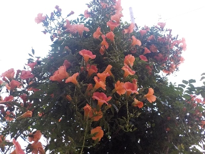
沢山の花はいいですね。
ノウゼンカズラの花が咲いているのに気づく時って、暗くなってからが多い気がする。
2024/06/26

沢山の花はいいですね。
ノウゼンカズラの花が咲いているのに気づく時って、暗くなってからが多い気がする。
2023/10/08
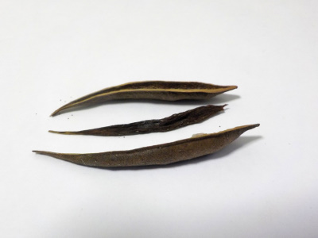
ノウゼンカズラのサヤが茶色くなったので、中身を見てみました。
薄っぺらい茶色いものはあったけど、そこに豆は付いていませんでした。
サヤが小さかったので、豆が出来なかったのかもしれない。
2023/08/13
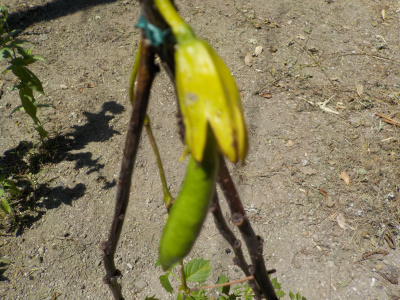
花が咲いた後に、小さい豆のさやが一つだけ出来ました。
種を植えたいと思わないでもないですが、きっと親と同じものが育つっじゃないのかな。
同じものを増やしてもつまらないかな。
2023/07/23
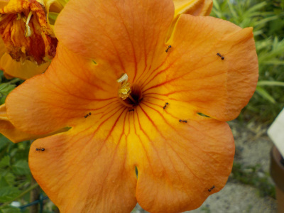
小さいアリが花の上をうろうろしてます。何してるんでしょうね。
2023/07/04
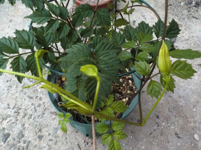
今年も花が楽しめそうです。
玄関とかに置くなら、これくらいの大きさが丁度いいかなと思っています。
2023/04/09
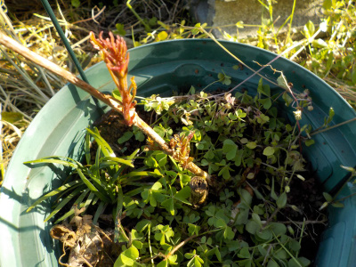
春になって芽が出ましたが、根元の方だけでした。
去年と比べて、あまり成長していないです。もうちょっと大きくなって欲しいな。
2022/09/18
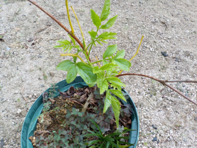
水切れで葉を落としたノウゼンカズラから新芽が出ました。枯れなくて良かったです。
屋根の下に置いて水切れさせてしまったので、もう屋根の下には置かないことにします。
2022/08/27
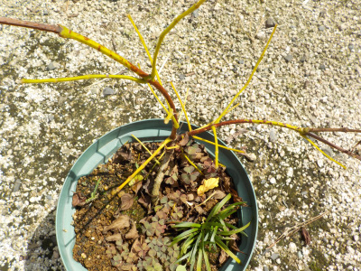
水やりを忘れていました。気付いたときには葉っぱが黒くなってて、今は枝だけです。
枝が青いので、新芽が出るんじゃないかと思っています。
2022/06/30
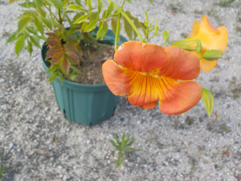
2020年10月に挿し木して、2022年6月に開花です。
去年はほとんど成長していなかったので環境が合っていないっじゃないかと心配していたんですが、開花して良かったです。
2022/06/28
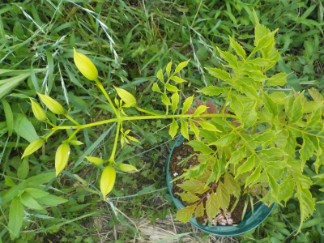
まだ木が小さいんですが、ツボミが出来ていました。
花が咲くのが楽しみです。
後、枯れたと思っていた木から芽が出ました。只今ノウゼンカズラの挿し木は2本です。
2022/04/19
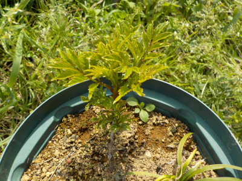
1年経ってもあんまり成長していないノウゼンカズラの挿し木苗です。
挿し木で残ったのはこの1本だけになりました。また挿し木しようかな。
過去の記事
2021/11/07
ノウゼンカズラの葉が落ちました。
2021/06/26
ノウゼンカズラの花が多いです。
2021/06/13
ノウゼンカズラが1本枯れました。
2021/05/09
挿し木のノウゼンカズラに根っこはないですが、鉢上げしました。
2021/04/10
ノウゼンカズラの挿木に根っこがありませんでした。
2021/03/28
ノウゼンカズラの挿木から葉っぱが出ました。
2021/01/31
ノウゼンカズラの挿し木は枯れ枝です。
2020/10/24
まだ葉っぱがあるので、ノウゼンカズラの挿し木に挑戦しました。
2020/09/13
ノウゼンカズラがまだきれいに咲いています。
2020/08/23
ノウゼンカズラが目につかない。
夏って感じがする花です。